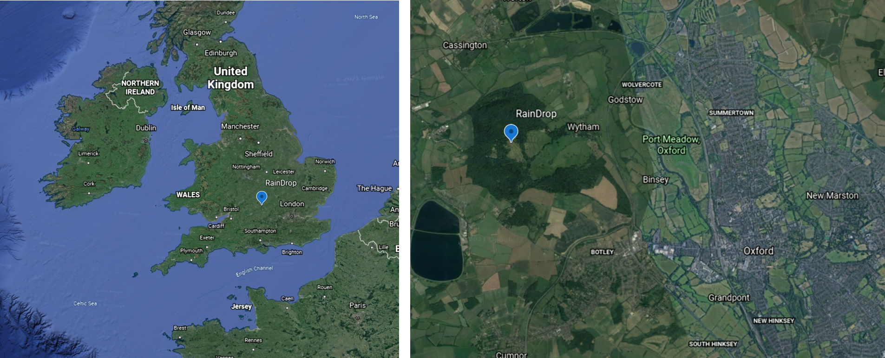
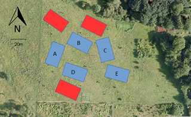
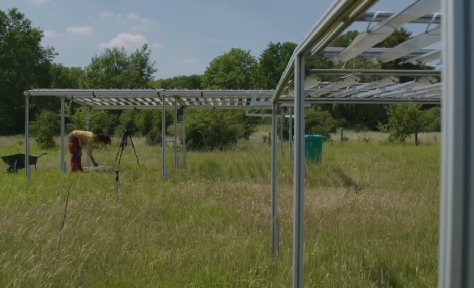
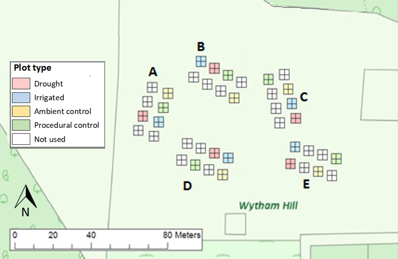

Last updated: 2021-04-09
Checks: 7 0
Knit directory: RainDrop_biodiversity/
This reproducible R Markdown analysis was created with workflowr (version 1.6.2). The Checks tab describes the reproducibility checks that were applied when the results were created. The Past versions tab lists the development history.
Great! Since the R Markdown file has been committed to the Git repository, you know the exact version of the code that produced these results.
Great job! The global environment was empty. Objects defined in the global environment can affect the analysis in your R Markdown file in unknown ways. For reproduciblity it’s best to always run the code in an empty environment.
The command set.seed(20210406) was run prior to running the code in the R Markdown file. Setting a seed ensures that any results that rely on randomness, e.g. subsampling or permutations, are reproducible.
Great job! Recording the operating system, R version, and package versions is critical for reproducibility.
Nice! There were no cached chunks for this analysis, so you can be confident that you successfully produced the results during this run.
Great job! Using relative paths to the files within your workflowr project makes it easier to run your code on other machines.
Great! You are using Git for version control. Tracking code development and connecting the code version to the results is critical for reproducibility.
The results in this page were generated with repository version 1e1c114. See the Past versions tab to see a history of the changes made to the R Markdown and HTML files.
Note that you need to be careful to ensure that all relevant files for the analysis have been committed to Git prior to generating the results (you can use wflow_publish or wflow_git_commit). workflowr only checks the R Markdown file, but you know if there are other scripts or data files that it depends on. Below is the status of the Git repository when the results were generated:
Ignored files:
Ignored: .Rhistory
Ignored: .Rproj.user/
Ignored: analysis/figure/
Ignored: analysis/site_libs/
Unstaged changes:
Deleted: analysis/about.Rmd
Note that any generated files, e.g. HTML, png, CSS, etc., are not included in this status report because it is ok for generated content to have uncommitted changes.
These are the previous versions of the repository in which changes were made to the R Markdown (analysis/index.Rmd) and HTML (docs/index.html) files. If you’ve configured a remote Git repository (see ?wflow_git_remote), click on the hyperlinks in the table below to view the files as they were in that past version.
| File | Version | Author | Date | Message |
|---|---|---|---|---|
| Rmd | 1e1c114 | jjackson-eco | 2021-04-09 | Adding species diversity |
| html | cc963a5 | jjackson-eco | 2021-04-08 | Build site. |
| html | 104d3f2 | jjackson-eco | 2021-04-08 | Build site. |
| html | c69c14a | jjackson-eco | 2021-04-08 | Build site. |
| Rmd | f8308af | jjackson-eco | 2021-04-08 | exploration for biomass |
| html | 7a899b4 | jjackson-eco | 2021-04-07 | Build site. |
| Rmd | 9381cc9 | jjackson-eco | 2021-04-07 | wflow_publish(files = c(“README.md”, "analysis/_site.yml“,”analysis/exploratory_analysis.Rmd", |
| html | 624d2cf | jjackson-eco | 2021-04-06 | Build site. |
| Rmd | 3330421 | jjackson-eco | 2021-04-06 | Adding introduction |
| html | 163401e | jjackson-eco | 2021-04-06 | Build site. |
| Rmd | 37e569f | jjackson-eco | 2021-04-06 | changing titles |
| html | 21d739f | jjackson-eco | 2021-04-06 | Build site. |
| Rmd | c207d30 | jjackson-eco | 2021-04-06 | Start workflowr project. |
This research site is the accompaniment of analyses on the impact of drought on biodiversity in a temperate calcareous grassland. We report on findings of the RainDrop experiment in the Upper Seeds meadow of the Wytham site in Oxford, UK. In this introduction, we give a brief description of the site and the experimental design. Then, each additional page of the site walks through analyses on the following topics:
Session information, including packages and versions, can be found at the bottom of each page.
RainDrop is adjacent to the long term monitoring project at Wytham woods near Oxford, found at 51.771\(^\circ\) North and -1.332\(^\circ\) East (images from Google Earth).

The site was gifted to the University of Oxford in 1947, after which various experiments were run on the site. In the late 1970s, there was an attempt to cultivate cereals on the grassland, which was unsuccessful. In summer 1979 cultivation stopped and monitoring of the site began. The meadow is a calcareous grassland, and can be described as a recovering grassland after the cultivation. More specifically, the top of the hill has fossilised coral bedrock (RainDrop experiment), which then moves down in to a conventional grassland and then and floodplain meadow below. The site is home over 100 species, which are mostly grasses. Due to its recovery state it also has a lot of pioneer species. The site is managed through cutting twice a year in June/October, and biomass is removed after cutting.
The RainDrop experiment began in Summer 2016 and the key experiment described here is part of the Drought-Net global network, for which information can be found here. The aim of this coordinated network of experiments is to predict ecological responses to climate change, and specifically how different ecosystems will respond to drought.
The experimental design is a fully randomised block design. At RainDrop, there were 8 initial blocks, of which 5 were chosen for reduced topographical diversity.

Each block has 8 experimental plots of 5m x 5m, which have automated irrigation control systems (large rain shelters) for the purpose of this experiment. Below you can see the structure of the rainfall shelters.

There are four rainfall treatments that are randomly located in each block:

The experiments are turned on in the early spring, and run until the end of the growing season in October, after which all key electrical equipment is removed. The shelters remain year round, but remain in the same orientation as the procedural control.
Biodiversity is measured in two key ways at the peak of the growing season (June) and the end of the growing season (September), each occurring before the management cutting of the site:
sessionInfo()R version 4.0.5 (2021-03-31)
Platform: x86_64-w64-mingw32/x64 (64-bit)
Running under: Windows 10 x64 (build 19042)
Matrix products: default
locale:
[1] LC_COLLATE=English_United Kingdom.1252
[2] LC_CTYPE=English_United Kingdom.1252
[3] LC_MONETARY=English_United Kingdom.1252
[4] LC_NUMERIC=C
[5] LC_TIME=English_United Kingdom.1252
attached base packages:
[1] stats graphics grDevices utils datasets methods base
other attached packages:
[1] workflowr_1.6.2
loaded via a namespace (and not attached):
[1] Rcpp_1.0.6 whisker_0.4 knitr_1.31 magrittr_2.0.1
[5] R6_2.5.0 rlang_0.4.10 fansi_0.4.2 highr_0.8
[9] stringr_1.4.0 tools_4.0.5 xfun_0.22 utf8_1.2.1
[13] git2r_0.28.0 jquerylib_0.1.3 htmltools_0.5.1.1 ellipsis_0.3.1
[17] rprojroot_2.0.2 yaml_2.2.1 digest_0.6.27 tibble_3.1.0
[21] lifecycle_1.0.0 crayon_1.4.1 later_1.1.0.1 sass_0.3.1
[25] vctrs_0.3.7 promises_1.2.0.1 fs_1.5.0 glue_1.4.2
[29] evaluate_0.14 rmarkdown_2.7 stringi_1.5.3 bslib_0.2.4
[33] compiler_4.0.5 pillar_1.5.1 jsonlite_1.7.2 httpuv_1.5.5
[37] pkgconfig_2.0.3